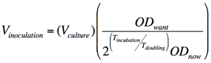

Kanban
Never run out of a lab reagent
Running out of a critical reagent in a lab can shut down your experiments for days. So I adapted a system from the Japanese auto industry called "kanban," meaning, "never run out."
After working in seven labs, I had seen a wide range of attempts to deal with stocking supplies. Some people overbought, turning their expensive lab space into a warehouse. Others waited until something ran out, which was often a source of tension and stress. There's almost always a general grumbling and frustration at people for forgetting to write something down when they use it up.
I agree that a good system requires everyone's participation, but I don't think people are just being lazy - they're just focused on their experiment. They have good intentions, but writing down a note to order gloves is low priority when you're working with sensitive RNA. Sometimes it's not clear when to reorder a supply. "When it's almost out" is a vague term, and tempts everybody to pass responsibility to the next person. Rather than be mad at people, change the system.
So I created a series of laminated index cards taped to common items. When you pick up the last box of gloves, you can't help but encounter the kanban, which contains all the information you need to reorder the reagent. This card then serves as a physical reminder that you can then drop off on your desk, or in a basket near whoever is in charge of reordering supplies or making buffers. When the supply is ordered, the technician can put the card in a 'waiting for' pile, so it's obvious what its status is. When the supply comes in, put the card on the last box, or earlier, depending on how long it takes to reorder the supply.
In this way, the lab will always have a reagent back in stock before they need it.
Here you can find some kanban I made in their original Pages format, as well as PDFs and a word doc, but I took out specific vendor prices and catalog numbers. I am releasing them under creative commons. If you make some and would like to share, please let me know.

Kanban by Ardon Z. Shorr
is licensed under a Creative Commons Attribution 3.0 License.
Based on a work at Wikipedia - Kanban
Inoculation Station
Set up cultures with ease
I loved working with yeast at John Woolford's lab. But it often took a while to calculate inoculation of new cultures based on this formula:

So I wrote a Google spreadsheet where I can put in my strains, current OD, dilution factor, target OD, hours of incubation, and culture volume. The spreadsheet then tells me how much yeast to inoculate in galactose and glucose, and when the culture will be ready. When I check the culture in the morning, I can also back-calculate the actual doubling time to get more accurate numbers for next time.
Numbers you provide are in white boxes. Numbers the program computes are in gray. Let me know what you think!
Inoculation Station by Ardon Z. Shorr
is licensed under a Creative Commons Attribution 3.0 License